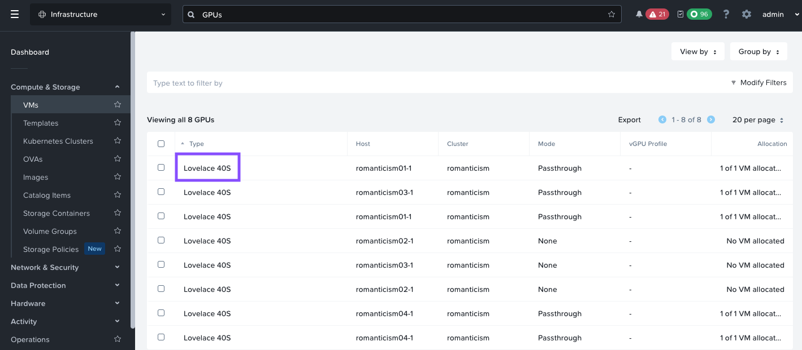
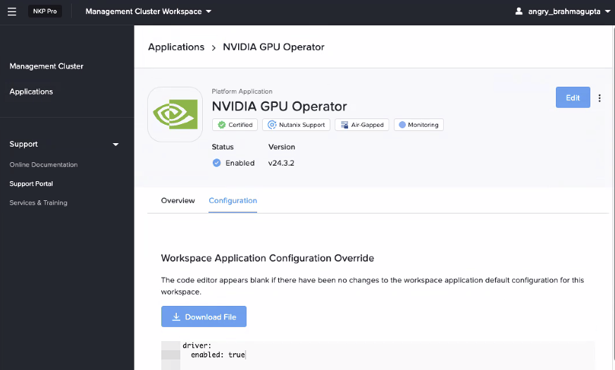

Deploy NKP Clusters
This section will take you through install NKP(Kubernetes) on Nutanix cluster as we will be deploying AI applications on these kubernetes clusters.
We will use the CAPI based deployment of NKP. This will automatically deploy the required infrastructure VMs for the cluster by connecting to Nutanix Cluster APIs. There is no requirement to use Terraform or or other IaC tools to deploy NKP.
This section will expand to other available Kubernetes implementations on Nutanix.
stateDiagram-v2
direction LR
state DeployNKP {
[*] --> CreateNkpMachineImage
CreateNkpMachineImage --> CreateNKPCluster
CreateNKPCluster --> GenerateLicense
GenerateLicense --> InstallLicense
InstallLicense --> DeployGpuNodePool
DeployGpuNodePool --> EnableGpuOperator
EnableGpuOperator --> [*]
}
PrepWorkstation --> DeployJumpHost
DeployJumpHost --> DeployNKP
DeployNKP --> DeployNai : Next sectionDeploying NKP Cluster
This lab will focus on deploying NKP to host NAI workloads. However, the steps can also be used deploy a custom NKP deployment if that's the aim.
We will only deploy 1 (one) NKP cluster and have the management and workload part in this. For production environments, it is advised to have separate NKP clusters for management and workloads.
Consider using NKP The Hard Way section to create a customized version of your NKP cluster with separate NKP clusters for management and workloads.
Once you have determined the resource requirements for a custom NKP deployment, modify the environment variables and values in the .env file to suit your resource needs for your NKP cluster.
NKP High Level Cluster Design
The nkpdev cluster will be hosting the LLM model serving endpoints and AI application stack. This cluster and will require a dedicated GPU node pool.
Sizing Requirements
Below are the sizing requirements needed to successfully deploy NAI on a NKP Cluster (labeled as nkpdev) and subsequently deploying single LLM inferencing endpoint on NAI using the meta-llama/Meta-Llama-3-8B-Instruct LLM model.
Calculating GPU Resources Tips
The calculations below assume that you're already aware of how much memory is required to load target LLM model.
For a general example:
- To host a 8b(illion) parameter model, multiply the parameter number by 2 to get minimum GPU memory requirments. e.g. 16GB of GPU memory is required for 8b parameter model.
So in the case of the
meta-llama/Meta-Llama-3-8B-Instructmodel, you'll need a min. 16 GiB GPU vRAM available
Below are additional sizing consideration "Rule of Thumb" for further calculating min. GPU node resources:
- For each GPU node will have 8 CPU cores, 24 GB of memory, and 300 GB of disk space.
- For each GPU attached to the node, add 16 GiB of memory.
- For each endpoint attached to the node, add 8 CPU cores.
- If a model needs multiple GPUs, ensure all GPUs are attached to the same worker node
- For resiliency, while running multiple instances of the same endpoint, ensure that the GPUs are on different worker nodes.
Since we will be testing with the meta-llama/Meta-Llama-3-8B-Instruct HuggingFace model, we will require a GPU with a min. of 24 GiB GPU vRAM available to support this demo.
Note
GPU min. vRAM should be 24 GB, such as NVIDIA L4 Model.
Below are minimum requirements for deploying NAI on the NKP Demo Cluster.
| Role | No. of Nodes (VM) | vCPU per Node | Memory per Node | Storage per Node | Total vCPU | Total Memory |
|---|---|---|---|---|---|---|
| Control plane | 3 | 4 | 16 GB | 150 GB | 12 | 48 GB |
| Worker | 4 | 8 | 32 GB | 150 GB | 32 | 128 GB |
| GPU | 1 | 16 | 40 GB | 300 GB | 16 | 40 GB |
| Totals | 60 | 216 GB |
Pre-requisites
- Existing Ubuntu Linux jumphost VM. See here for jumphost installation steps.
- Docker or Podman installed on the jumphost VM
- Nutanix PC is at least
2024.3 - Nutanix AOS is at least
6.8+,6.10 - Download and install
nkpbinary from Nutanix Portal - Find and reserve 3 IPs for control plane and MetalLB access from AHV network
- Find GPU details from Nutanix cluster
- Create a base image to use with NKP nodes using
nkpcommand
Install NKP Binaries
- Login to Nutanix Portal using your credentials
- Go to Downloads > Nutanix Kubernetes Platform (NKP)
- Select NKP for Linux and copy the download link to the
.tar.gzfile -
If you haven't already done so, Open new
VSCodewindow on your jumphost VM -
In
VSCodeExplorer pane, click on existing$HOMEfolder -
Click on New Folder name it:
nkp -
On
VSCodeExplorer plane, click the$HOME/nkpfolder -
On
VSCodemenu, selectTerminal>New Terminal -
Browse to
nkpdirectory -
Download and extract the NKP binary from the link you copied earlier
-
Move the
nkpbinary to a directory that is included in yourPATHenvironment variable -
Verify the
nkpbinary is installed correctly. Ensure the version is latestNote
At the time of writing this lab nkp version is
v2.16.1
Setup Docker on Jumphost
If not already done, follow the steps in Setup Docker on Jumphost section.
-
Login to docker on the jumphost
~$ docker login USING WEB-BASED LOGIN To sign in with credentials on the command line, use 'docker login -u <username>' Your one-time device confirmation code is: JXXX-VXXX Press ENTER to open your browser or submit your device code here: https://login.docker.com/activate Waiting for authentication in the browser… WARNING! Your password will be stored unencrypted in /home/ubuntu/.docker/config.json. Configure a credential helper to remove this warning. See https://docs.docker.com/engine/reference/commandline/login/#credential-stores -
Open the docker login URL in a browser after you enter the
docker logincommand.
Reserve Control Plane and MetalLB IP
Nutanix AHV IPAM network allows you to black list IPs that needs to be reserved for specific application endpoints. We will use this feature to find and reserve three IPs.
We will reserve a total of three IPs for the following:
| Cluster Role | Cluster Name | NKP | NAI |
|---|---|---|---|
| Dev | nkpdev |
2 | 1 |
-
Get the CIDR range for the AHV network(subnet) where the application will be deployed
-
From VSC, logon to your jumpbox VM and open Terminal
-
Install
nmaptool (if not already done) -
Find three unused static IP addresses in the subnet
-
Logon to any CVM in your Nutanix cluster and execute the following to add chosen static IPs to the AHV IPAM network
- Username: nutanix
- Password: your Prism Element password
Reservation of IPs
Reserve the firs IPs for NKP control plane Reserve the second two IPs for MetalLB distributed load balancer - We will use one of these IP for NAI
Reserve the third IP for NAI. We will use the NAI IP in the next NAI section to assign the FDQN and install SSL certificate.
| Component | IP | FQDN |
|---|---|---|
| NKP Control Plane VIP | 10.x.x.214 |
- |
| NKP MetalLB IP Range | 10.x.x.215-10.x.x.216 |
- |
| NAI | 10.x.x.216 |
nai.10.x.x.216.nip.io |
Create Base Image for NKP
About NKP Base Image OS Version on Nutanix Cluster
The base image for NKP is a minimal image that contains the required packages and tools to run the Kubernetes cluster. The base image is used to create the worker node VMs and the control plane VMs.
NKP base image can be Rocky Linux 9.4 image and is part of NKP Starter license. This image is maintained and supported by Nutanix. The image is updated regularly to include the latest security patches and bug fixes. Customers should not modify the base image.
Using NKP Pro license also offers choice of using Ubuntu 22.04 base image for GPU based workload deployments.
In this section we will go through creating a base image for all the control plane and worker node VMs on Nutanix. We will use the Ubuntu 22.04 image as the base image as we will need GPU support for AI applications. NVIDIA GPU drivers are not yet available for Rocky Linux 9.4 base image.
NKP Cloud Support
For information about other supported operating systems for Nutanix Kubernetes Platform (NKP), see NKP Cloud Support.
-
In VSC Explorer pane, Click on New Folder
-
Call the folder
nkpunder$HOMEdirectory -
In the
nkpfolder, click on New File and create new file with the following name: -
Run the following command to generate an new RSA key pair on the jumphost VM. This SSH key pair will be used for authentication between the jumphost and NKP K8S cluster nodes.
Do you have existing SSH key pair?
Copy the key pair from your workstation (PC/Mac) to
~/.ssh/directory on your Jumphost VM.Accept the default file location as
~/.ssh/id_rsaSSH key pair will stored in the following location:
-
Fill the following values inside the
.envfileexport NUTANIX_USER=_your_nutanix_username export NUTANIX_PASSWORD=_your_nutanix_password export NUTANIX_ENDPOINT=_your_prism_central_fqdn export NUTANIX_CLUSTER=_your_prism_element_cluster_name export NUTANIX_SUBNET_NAME=_your_ahv_ipam_network_name export STORAGE_CONTAINER=_your_storage_container_nmae export SSH_PUBLIC_KEY=_path_to_ssh_pub_key_on_jumphost_vm export NKP_CLUSTER_NAME=_your_nkp_cluster_name export CONTROLPLANE_VIP=_your_nkp_cluster_controlplane_ip export LB_IP_RANGE=_your_range_of_two_ips export DOCKER_USERNAME=_your_docker_username export DOCKER_PASSWORD=_your_docker_passwordexport NUTANIX_USER=admin export NUTANIX_PASSWORD=xxxxxxxx export NUTANIX_ENDPOINT=pc.example.com export NUTANIX_CLUSTER=pe export NUTANIX_SUBNET_NAME=User1 export STORAGE_CONTAINER=default export SSH_PUBLIC_KEY=$HOME/.ssh/id_rsa.pub export NKP_CLUSTER_NAME=nkpdev export CONTROLPLANE_VIP=10.x.x.214 export LB_IP_RANGE=10.x.x.215-10.x.x.216 export DOCKER_USERNAME=_your_docker_username export DOCKER_PASSWORD=_your_docker_password_pat -
Using VSC Terminal, load the environment variables and its values
-
Create the base image and upload to Prism Central using the following command.
Note
Image creation will take up to 5 minutes.
nkp create image nutanix ubuntu-22.04 \ --endpoint ${NUTANIX_ENDPOINT} --cluster ${NUTANIX_CLUSTER} \ --subnet ${NUTANIX_SUBNET_NAME} --insecure > Provisioning and configuring image Manifest files extracted to $HOME/nkp/.nkp-image-builder-3243021807 nutanix.kib_image: output will be in this color. ==> nutanix.kib_image: Creating Packer Builder virtual machine... nutanix.kib_image: Virtual machine nkp-ubuntu-22.04-1.29.6-20240717082720 created nutanix.kib_image: Found IP for virtual machine: 10.x.x.234 ==> nutanix.kib_image: Running post-processor: packer-manifest (type manifest) ---> 100% Build 'nutanix.kib_image' finished after 4 minutes 55 seconds. ==> Wait completed after 4 minutes 55 seconds ==> Builds finished. The artifacts of successful builds are: --> nutanix.kib_image: nkp-ubuntu-22.04-1.29.6-20240717082720 --> nutanix.kib_image: nkp-ubuntu-22.04-1.29.6-20240717082720Image name - This will be different in your environment
Note image name from the previous
nkpcreate image command outputWarning
Make sure to use image name that is generated in your environment for the next steps.
-
Populate the
.envfile with the NKP image name by adding (appending) the following environment variables and save it
We are now ready to install the workload nkpdev cluster
Create NKP Workload Cluster
Warning
Do not use hyphens - in the nkp cluster name.
Note
In this lab the workload cluster will have the Management cluster role as well to reduce resource consumption in a lab environment.
However, for production environments, the ideal design is to have a separate management and workload clusters.
-
Open .env file in VSC and add (append) the following environment variables to your
.envfile and save itexport CONTROL_PLANE_REPLICAS=_no_of_control_plane_replicas export CONTROL_PLANE_VCPUS=_no_of_control_plane_vcpus export CONTROL_PLANE_CORES_PER_VCPU=_no_of_control_plane_cores_per_vcpu export CONTROL_PLANE_MEMORY_GIB=_no_of_control_plane_memory_gib export WORKER_REPLICAS=_no_of_worker_replicas export WORKER_VCPUS=_no_of_worker_vcpus export WORKER_CORES_PER_VCPU=_no_of_worker_cores_per_vcpu export WORKER_MEMORY_GIB=_no_of_worker_memory_gib export CSI_FILESYSTEM=_preferred_filesystem_ext4/xfs export CSI_HYPERVISOR_ATTACHED=_true/false export DOCKER_USERNAME=_your_docker_username export DOCKER_PASSWORD=_your_docker_passwordexport CONTROL_PLANE_REPLICAS=3 export CONTROL_PLANE_VCPUS=4 export CONTROL_PLANE_CORES_PER_VCPU=1 export CONTROL_PLANE_MEMORY_GIB=16 export WORKER_REPLICAS=4 export WORKER_VCPUS=8 export WORKER_CORES_PER_VCPU=1 export WORKER_MEMORY_GIB=32 export CSI_FILESYSTEM=ext4 export CSI_HYPERVISOR_ATTACHED=true export DOCKER_USERNAME=_your_docker_username export DOCKER_PASSWORD=_your_docker_password -
Source the new variables and values to the environment
-
In VSC, open Terminal, enter the following command to create the workload cluster
Check your command for correct argument values
Run the following command to verify your
nkpcommand and associated environment variables and values.echo "nkp create cluster nutanix -c ${NKP_CLUSTER_NAME} \ --control-plane-endpoint-ip ${CONTROLPLANE_VIP} \ --control-plane-prism-element-cluster ${NUTANIX_CLUSTER} \ --control-plane-subnets ${NUTANIX_SUBNET_NAME} \ --control-plane-vm-image ${NKP_IMAGE} \ --csi-storage-container ${STORAGE_CONTAINER} \ --endpoint https://${NUTANIX_ENDPOINT}:9440 \ --worker-prism-element-cluster ${NUTANIX_CLUSTER} \ --worker-subnets ${NUTANIX_SUBNET_NAME} \ --worker-vm-image ${NKP_IMAGE} \ --ssh-public-key-file ${SSH_PUBLIC_KEY} \ --kubernetes-service-load-balancer-ip-range ${LB_IP_RANGE} \ --control-plane-disk-size 150 \ --control-plane-memory ${CONTROL_PLANE_MEMORY_GIB} \ --control-plane-vcpus ${CONTROL_PLANE_VCPUS} \ --control-plane-cores-per-vcpu ${CONTROL_PLANE_CORES_PER_VCPU} \ --worker-disk-size 150 \ --worker-memory ${WORKER_MEMORY_GIB} \ --worker-vcpus ${WORKER_VCPUS} \ --worker-cores-per-vcpu ${WORKER_CORES_PER_VCPU} \ --csi-file-system ${CSI_FILESYSTEM} \ --csi-hypervisor-attached-volumes=${CSI_HYPERVISOR_ATTACHED} \ --registry-mirror-url "https://registry-1.docker.io" \ --registry-mirror-username ${DOCKER_USERNAME} \ --registry-mirror-password ${DOCKER_PASSWORD} \ --self-managed \ --insecure"If the values are incorrect, add the correct values to
.envand source the again by running the following commandThen rerun the
echo nkpcommand to verify the values again before running thenkp create cluster nutanixcommand.nkp create cluster nutanix -c ${NKP_CLUSTER_NAME} \ --control-plane-endpoint-ip ${CONTROLPLANE_VIP} \ --control-plane-prism-element-cluster ${NUTANIX_CLUSTER} \ --control-plane-subnets ${NUTANIX_SUBNET_NAME} \ --control-plane-vm-image ${NKP_IMAGE} \ --csi-storage-container ${STORAGE_CONTAINER} \ --endpoint https://${NUTANIX_ENDPOINT}:9440 \ --worker-prism-element-cluster ${NUTANIX_CLUSTER} \ --worker-subnets ${NUTANIX_SUBNET_NAME} \ --worker-vm-image ${NKP_IMAGE} \ --ssh-public-key-file ${SSH_PUBLIC_KEY} \ --kubernetes-service-load-balancer-ip-range ${LB_IP_RANGE} \ --control-plane-disk-size 150 \ --control-plane-memory ${CONTROL_PLANE_MEMORY_GIB} \ --control-plane-vcpus ${CONTROL_PLANE_VCPUS} \ --control-plane-cores-per-vcpu ${CONTROL_PLANE_CORES_PER_VCPU} \ --worker-disk-size 150 \ --worker-memory ${WORKER_MEMORY_GIB} \ --worker-vcpus ${WORKER_VCPUS} \ --worker-cores-per-vcpu ${WORKER_CORES_PER_VCPU} \ --csi-file-system ${CSI_FILESYSTEM} \ --csi-hypervisor-attached-volumes=${CSI_HYPERVISOR_ATTACHED} \ --registry-mirror-url "https://registry-1.docker.io" \ --registry-mirror-username ${DOCKER_USERNAME} \ --registry-mirror-password ${DOCKER_PASSWORD} \ --self-managed \ --insecure> ✓ Creating a bootstrap cluster ✓ Upgrading CAPI components ✓ Waiting for CAPI components to be upgraded ✓ Initializing new CAPI components ✓ Creating ClusterClass resources ✓ Creating ClusterClass resources > Generating cluster resources cluster.cluster.x-k8s.io/nkpdev created secret/nkpdev-pc-credentials created secret/nkpdev-pc-credentials-for-csi created secret/nkpdev-image-registry-credentials created ✓ Waiting for cluster infrastructure to be ready ✓ Waiting for cluster control-planes to be ready ✓ Waiting for machines to be ready ✓ Initializing new CAPI components ✓ Creating ClusterClass resources ✓ Moving cluster resources > You can now view resources in the moved cluster by using the --kubeconfig flag with kubectl. For example: kubectl --kubeconfig="$HOME/nkp/nkpdev.conf" get nodes > ✓ Deleting bootstrap cluster Cluster default/nkpdev kubeconfig was written to to the filesystem. You can now view resources in the new cluster by using the --kubeconfig flag with kubectl. For example: kubectl --kubeconfig="$HOME/nkp/nkpdev.conf" get nodes > Starting kommander installation ✓ Deploying Flux ✓ Deploying Ingress certificate ✓ Creating kommander-overrides ConfigMap ✓ Deploying Git Operator ✓ Creating GitClaim for management GitRepository ✓ Creating GitClaimUser for accessing management GitRepository ✓ Creating HTTP Proxy configuration ✓ Deploying Flux configuration ✓ Deploying Kommander Operator ✓ Creating KommanderCore resource ✓ Cleaning up kommander bootstrap resources ✓ Deploying Substitution variables ✓ Deploying Flux configuration ✓ Deploying Gatekeeper ✓ Deploying Kommander AppManagement ✓ Creating Core AppDeployments ✓ 4 out of 12 core applications have been installed (waiting for dex, dex-k8s-authenticator and 6 more) ✓ 5 out of 12 core applications have been installed (waiting for dex-k8s-authenticator, kommander and 5 more) ✓ 7 out of 12 core applications have been installed (waiting for dex-k8s-authenticator, kommander and 3 more) ✓ 8 out of 12 core applications have been installed (waiting for dex-k8s-authenticator, kommander-ui and 2 more) ✓ 9 out of 12 core applications have been installed (waiting for dex-k8s-authenticator, kommander-ui and 1 more) ✓ 10 out of 12 core applications have been installed (waiting for dex-k8s-authenticator, traefik-forward-auth-mgmt) ✓ 11 out of 12 core applications have been installed (waiting for traefik-forward-auth-mgmt) ✓ Creating cluster-admin credentials > Cluster was created successfully! Get the dashboard details with: > nkp get dashboard --kubeconfig="$HOME/nkp/nkpdev.conf"What is a Self-Manged Cluster?
The
--self-managedargument of thenkp create cluster nutanixcommand will deploy bootstrap, and Kommander management automatically.The appendix section has information on how to deploy a cluster without using the
--self-managedoption.Usually preferred by customer DevOps teams to have more control over the deployment process. This way the customer can do the following:
- Deploy bootstrap (
Kind) cluster - Deploy NKP Management cluster
- Choose to migrate the CAPI components over to NKP Management cluster
- Choose to customize Kommander Managment component instllation
- Choose to deploy workload clusters from NKP Kommander GUI or
- Choose to deploy workload clusters using scripts to automate the process
See NKP the Hard Way section for more information for customizable NKP cluster deployments.
- Deploy bootstrap (
-
Observe the events in the shell and in Prism Central events
-
Store kubeconfig file for
nkpdevcluster -
Confirm the access to
nkpdevcluster$ kubectl get nodes NAME STATUS ROLES AGE VERSION nkpdev-md-0-x948v-hvxtj-9r698 Ready <none> 4h49m v1.29.6 nkpdev-md-0-x948v-hvxtj-fb75c Ready <none> 4h50m v1.29.6 nkpdev-md-0-x948v-hvxtj-mdckn Ready <none> 4h49m v1.29.6 nkpdev-md-0-x948v-hvxtj-shxc8 Ready <none> 4h49m v1.29.6 nkpdev-r4fwl-8q4ch Ready control-plane 4h50m v1.29.6 nkpdev-r4fwl-jf2s8 Ready control-plane 4h51m v1.29.6 nkpdev-r4fwl-q888c Ready control-plane 4h49m v1.29.6
Licensing
We need to generate a license for the NKP cluster which is the total for all the vCPUs used by worker nodes.
For example, in the Sizing Requirements section, the NKP Demo Cluster Total vCPU count is equal to 60, whereas the actual worker nodes total vCPU count is only 48.
Generate NKP Pro License
To generate a NKP Pro License for the NKP cluster:
Note
Nutanix Internal users should logon using Nutanix SSO
Nutanix Partners/Customers should logon to Portal using their Nutanix Portal account credentials
- Login to Nutanix Portal using your credentials
- Go to Licensing > License Summary
- Click on the small drop down arrow on Manage Licenses and choose Nutanix Kubernetes Platform (NKP)
- Input the NKP cluster name
- Click on the plus icon
- Click on Next in the bottom right corner
- Select NKP Pro License
- Select Apply to cluster
- Choose Non-production license and Save
- Select the cluster name and click on Next
- Input the number of vCPU (
60) from our calculations in the previous section - Click on Save
- Download the csv file and store it in a safe place
Applying NKP Pro License to NKP Cluster
-
Login to the Kommander URL for
nkpdevcluster with the generated credentials that was generated in the previous section. The following commands will give you the credentials and URL. -
Go to Licensing and click on Remove License to remove the Starter license
- Type nutanix-license in the confirmation box and click on Remove License
- Click on Add License, choose Nutanix platform and paste the license key from the previous section
- Click on Save
- Confirm the license is applied to the cluster by cheking the License Status in the License menu
- The license will be applied to the cluster and the license status will reflect NKP Pro in the top right corner of the dashboard
Add NKP GPU Workload Pool
CPU only LLM Hosting
Enabling GPU and NVIDIA GPU Operator in NKP is not essential for NAI v2.3
NAI v2.3 can host LLM up to 7 billion parameters on CPU
Warning
Skip this section if no GPUs are required
The steps below covers the following: - Retrieving and Applying NKP Pro License - Identifying the GPU device name - Deploying the GPU nodepool - Enabling the NVIDIA GPU Operator
Note
To Enable the GPU Operator afterwards using the NKP Marketplace, a minimal NKP Pro license is required.
Find GPU Device Details
As we will be deploying Nutanix Enterprise AI (NAI) in the next section, we need to find the GPU details beforehand.
Find the details of GPU on the Nutanix cluster while still connected to Prism Central (PC).
- Logon to Prism Central GUI
- On the general search, type GPUs
-
Click on the GPUs result

-
Lovelace 40sis the GPU available for use - Use
Lovelace 40sin the evironment variables in the next section.
Create NKP GPU Workload Pool
In this section we will create a nodepool to host the AI apps with a GPU.
-
Open .env file in VSC and add (append) the following environment variables to your
.envfile and save itexport GPU_NAME=_name_of_gpu_device_ export GPU_REPLICA_COUNT=_no_of_gpu_worker_nodes export GPU_POOL=_name_of_gpu_pool export GPU_NODE_VCPUS=_no_of_gpu_node_vcpus export GPU_NODE_CORES_PER_VCPU=_per_gpu_node_cores_per_vcpu export GPU_NODE_MEMORY_GIB=_per_gpu_node_memory_gib export GPU_NODE_DISK_SIZE_GIB=_per_gpu_node_memory_gib -
Source the new variables and values to the environment
-
Run the following command to create a GPU nodepool manifest
nkp create nodepool nutanix \ --cluster-name ${NKP_CLUSTER_NAME} \ --prism-element-cluster ${NUTANIX_CLUSTER} \ --subnets ${NUTANIX_SUBNET_NAME} \ --vm-image ${NKP_IMAGE} \ --disk-size ${GPU_NODE_DISK_SIZE_GIB} \ --memory ${GPU_NODE_MEMORY_GIB} \ --vcpus ${GPU_NODE_VCPUS} \ --cores-per-vcpu ${GPU_NODE_CORES_PER_VCPU} \ --replicas ${GPU_REPLICA_COUNT} \ --wait \ ${GPU_POOL} --dry-run -o yaml > gpu-nodepool.yamlNote
Right now there is no switch for GPU in
nkpcommand. We need to do dry-run the output into a file and then add the necessary GPU specifications -
Add the necessary gpu section to our new
gpu-nodepool.yamlusingyqcommandyq e '(.spec.topology.workers.machineDeployments[] | select(.name == "gpu-nodepool").variables.overrides[] | select(.name == "workerConfig").value.nutanix.machineDetails) += {"gpus": [{"type": "name", "name": strenv(GPU_NAME)}]}' -i gpu-nodepool.yamlSuccessful addtion of GPU specs?
You would be able to see the added gpu section at the end of the
gpu-nodepool.yamlfileapiVersion: cluster.x-k8s.io/v1beta1 kind: Cluster <snip> name: gpu-nodepool variables: overrides: - name: workerConfig value: nutanix: machineDetails: bootType: legacy cluster: name: romanticism type: name image: name: nkp-ubuntu-22.04-1.29.6-20240718055804 type: name memorySize: 40Gi subnets: - name: User1 type: name systemDiskSize: 200Gi vcpuSockets: 16 vcpusPerSocket: 1 gpus: - type: name name: Lovelace 40S -
Monitor Cluster-Api resources (on a different shell) to ensure gpu machine will be successfully created
-
Apply the
gpu-nodepool.yamlfile to the workload cluster -
Monitor the progress of the command and check Prism Central events for creation of the GPU worker node
-
Check nodes status in workload
nkpdevcluster and note the gpu worker node$ kubectl get nodes NAME STATUS ROLES AGE VERSION nkpdev-gpu-nodepool-7g4jt-2p7l7-49wvd Ready <none> 5m57s v1.29.6 nkpdev-md-0-q679c-khl2n-9k7jk Ready <none> 74m v1.29.6 nkpdev-md-0-q679c-khl2n-9nk6h Ready <none> 74m v1.29.6 nkpdev-md-0-q679c-khl2n-nf9p6 Ready <none> 73m v1.29.6 nkpdev-md-0-q679c-khl2n-qgxp9 Ready <none> 74m v1.29.6 nkpdev-ncnww-2dg7h Ready control-plane 73m v1.29.6 nkpdev-ncnww-bbm4s Ready control-plane 72m v1.29.6 nkpdev-ncnww-hldm9 Ready control-plane 75m v1.29.6
Enable GPU Operator
We will need to enable GPU operator for deploying NKP application.
- In the NKP GUI, Go to Clusters
- Click on Kommander Host
- Go to Applications
- Search for NVIDIA GPU Operator
- Click on Enable
- Click on Configuration tab
-
Click on Workspace Application Configuration Override and paste the following yaml content
As shown here:

-
Click on Enable on the top right-hand corner to enable GPU driver on the Ubuntu GPU nodes
-
Check GPU operator resources and make sure they are running
kubectl get po -A | grep -i nvidia nvidia-container-toolkit-daemonset-fjzbt 1/1 Running 0 28m nvidia-cuda-validator-f5dpt 0/1 Completed 0 26m nvidia-dcgm-exporter-9f77d 1/1 Running 0 28m nvidia-dcgm-szqnx 1/1 Running 0 28m nvidia-device-plugin-daemonset-gzpdq 1/1 Running 0 28m nvidia-driver-daemonset-dzf55 1/1 Running 0 28m nvidia-operator-validator-w48ms 1/1 Running 0 28m -
Run a sample GPU workload to confirm GPU operations
-
Follow the logs to check if the GPU operations are successful
Now we are ready to deploy our AI workloads.